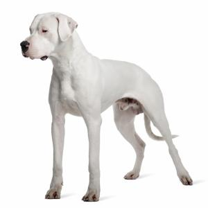

Dogo Argentino

El dogo argentino es uno de los perros más populares del continente americano.
Se trata de un molosoide tipo dogo. Destaca por su gran tamaño, el pelaje de color
blanco y su aspecto poderoso. Es sin duda uno de los perros más impactantes que existen.
| Origen: |
America-Argentina |
| Altura: |
55-70cm |
| Peso: |
25-45kg |
Ver